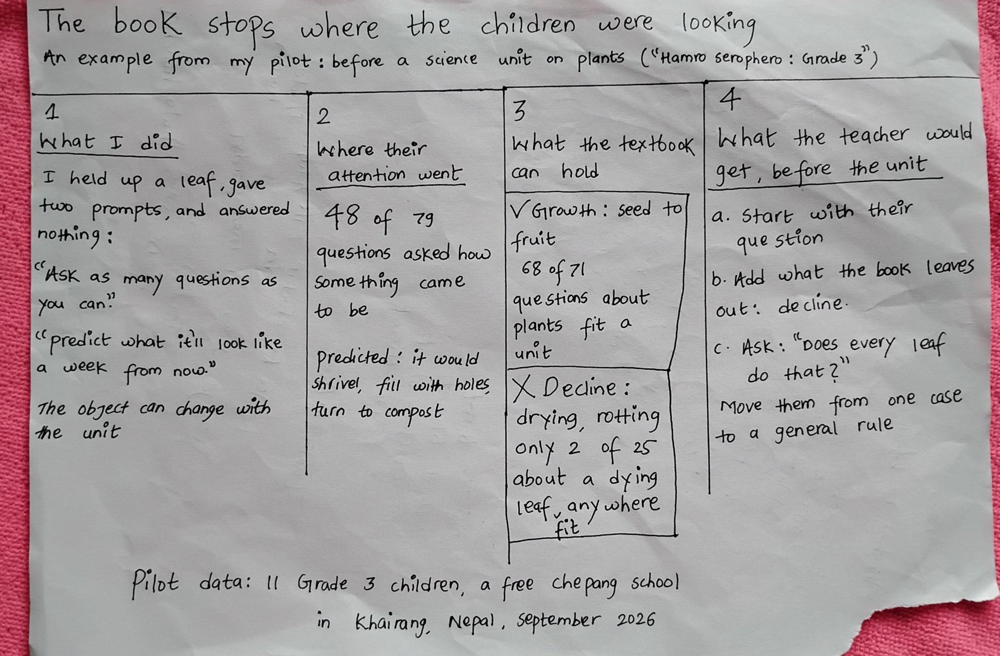

Utsuk Upreti · Hetauda, Nepal
The Noticing Instrument
A one-lesson kit that gives teachers a record of where a child’s attention goes before a unit, shows what their textbook has no room for, and lets the lesson build on it.
The problem
A teacher in a Nepali government school has no record of where a child’s attention goes before a lesson, so nobody can tell whether a lesson extended it or replaced it.
Nepal’s government textbooks, in every subject, are written for one imagined child and sent to every government school in the country. Every real class differs from that child somewhere, and a teacher usually finds out only after the lesson, when some children follow and some don’t.
The pilot, September 2026
I ran six sessions with 11 Grade 3 children at a free school for the Chepang, a marginalized community in rural Nepal. When I held up a leaf, their first questions could have been asked about any tree, or any object at all. Only when I told them to look closely at the leaf did they start asking about the leaf itself. Only then came the one “why” of their 79 questions: “Why is this side green and this side white?”

The dish and the cook
I asked each child to teach me about their favourite food. One boy, C1, walked me through a single dish in sixteen steps, from peeling to eating. Another, C7, gave me a whole meal on a wood fire. He started with the daal (“lentils”), went to the fire, put the rice on, went back to the fire, heard the whistle, came back to the daal for salt and spices, and only then turned to the potatoes, moving between them with ani (“then”).
C1 followed the dish; C7 followed the cook. They had the same prompt on the same day. Neither way is wrong. They are two different pictures of a process, and each needs a different grammar of time: one for sequence, one for things happening at once. C1 needs “first”, “then” and “after that”, which the national Grade 3 English textbook doesn’t teach. C7 needs “when” and “while”. With my kit, a teacher could know this before the lesson rather than after.
This doesn’t mean a lesson for every child: my 11 children shared a handful of habits of attention, not eleven. A teacher who knows which of them are in the room could plan one lesson that works for both C1 and C7.
Where the books stop
I compared the same 230 utterances against Hamro Serophero, the one book carrying science and social studies at Grade 3 in Nepal. Of the children’s 71 questions that were about plants, 68 reach a unit. Of their 25 utterances about a leaf declining (“sukcha”, it dries; “pwaal parcha”, it gets holes), 2 do. The book grows a plant from seed to fruit and stops. The English book has no word for wilt, shrivel or rot. Two books in two subjects are both thinnest where these children were looking: at things changing.
What is different
Pre-tests and KWL charts ask children what they know, in the language of the lesson, as answers to a teacher’s questions. The exercises in my kit record each child’s habits of attention, alongside what they know.
These habits hold steady. In two sessions five days apart, each child’s questions resembled their own about twice as closely as other children’s, and shuffling the names reproduces that about once in seventy times.
Every line is then set against the actual textbook, lesson by lesson. Funds of Knowledge research asks what children bring that a lesson could use. I am asking what they bring that the book has nowhere to put.
What went wrong
The pilot was one school, 11 children, me alone, handwritten notes, no recording, no second coder. I hinted in four of six sessions. In the cooking session I hinted to one child and it spread to the two boys sitting near him. Those two were C1 and C7. And the children treated every exercise as an exam.
What comes next
I am building three things around those failures, each made once and usable by every class with the same book:
- A one-lesson kit in Nepali, run by the class’s own teacher, not me: scripted prompts, a seating plan and a recording protocol.
- The one-page sheet the teacher fills in while the children talk.
- A lesson map for each government book, showing which units the children’s answers reach and what the book leaves out.
Then I find out whether it works without me. Four teachers at two schools run it alone, recorded, and coded by someone who doesn’t know what I expect. The kit works if the teacher’s sheet turns up at least 60% of what my full six sessions find with the same class. If it doesn’t, I’ll say so. If the paper version works, the next step is an app. Everything will be free to use.
About me
It started with my tendency to watch trees. Walking home from school in Hetauda, I preferred climbing a small wall and crossing the forestry campus to taking the highway. Trees were my attention magnet. Every child has one: something that grips their attention and doesn’t let go.
I studied in the Great Books programme at St. John’s College in Annapolis, and took a year away to do this work. At 20 I designed the pilot and ran every session myself. The pilot was funded by the Nepal Education Development Trust (NEDT). Every reflection sheet I filled in ended with the same line: my deepest confound is that I want this to work.